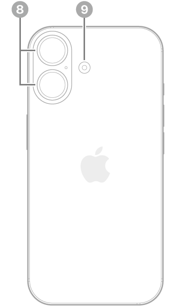
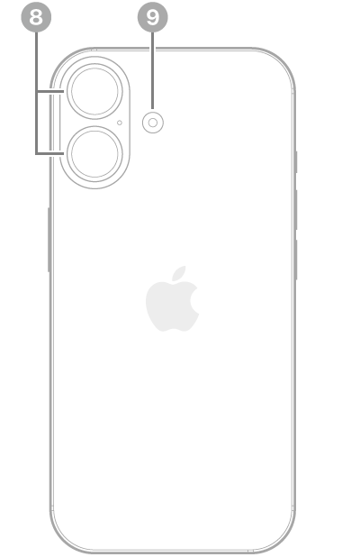

iPhone 16 - Especificaciones técnicas
Año de presentación: 2024
### Acabado
- Negro
- blanco
- rosa
- verde azulado
- azul ultramar
Diseño de aluminio, Parte delantera con Ceramic Shield de última generación, Parte trasera de vidrio tintado en masa (negro, rosa, verde azulado y azul ultramar)
Capacidad
- 128 GB
- 256 GB
- 512 GB
Dimensiones y peso^2^
- Ancho: 7,16 cm
- Alto: 14,76 cm
- Grosor: 0,78 cm
- Peso: 170 g
Pantalla
- Pantalla Super Retina XDR
- Pantalla OLED de 6,1 pulgadas (15,54 cm) en diagonal
- Resolución de 2.556 por 1.179 píxeles a 460 p/p
- Dynamic Island
- Pantalla HDR
- True Tone
- Gama cromática amplia (P3)
- Respuesta háptica
- Contraste de 2.000.000:1 (típico)
- Brillo máximo de 1.000 nits (típico), pico de brillo de 1.600 nits (HDR), pico de brillo de 2000 nits (en exteriores) y brillo mínimo de 1 nit
- Cubierta oleófuga antihuellas
- Compatible con la presentación simultánea de múltiples idiomas y grupos de caracteres
La pantalla del iPhone 16 tiene esquinas redondeadas que rematan el diseño curvo del dispositivo, y esas esquinas se encuentran dentro de un rectángulo estándar. Si se mide como un rectángulo estándar en diagonal, la pantalla tiene 6,12 pulgadas. La superficie real de visión es inferior.
Resistencia a las salpicaduras, el agua y el polvo^3^
Calificación IP68 según la norma IEC 60529 (hasta 6 metros de profundidad durante un máximo de 30 minutos)
Chip
- Chip A18
- Nueva CPU de 6 núcleos (2 de rendimiento y 4 de eficiencia)
- Nueva GPU de 5 núcleos
- Nuevo Neural Engine de 16 núcleos
Cámara
Sistema avanzado de cámara dual
- Cámara Fusion de 48 Mpx: 26 mm, apertura de ƒ/1,6, estabilización óptica de imagen por desplazamiento del sensor, 100 % Focus Pixels y compatibilidad con fotos de superalta resolución (24 y 48 Mpx)
- Teleobjetivo x2 de 12 Mpx: 48 mm, apertura de ƒ/1,78, estabilización óptica de imagen por desplazamiento del sensor de segunda generación y 100 % Focus Pixels
- Ultra gran angular de 12 Mpx: 13 mm, apertura de ƒ/2,2 y campo de visión de 120° y 100 % Focus Pixels
- Zoom óptico de acercamiento x2, zoom óptico de alejamiento x2 y rango de zoom óptico x4
- Zoom digital hasta x10
- Control de Cámara
- Cubierta de la lente de cristal de zafiro
- Flash True Tone
- Photonic Engine
- Deep Fusion
- HDR Inteligente 5
- Retratos de última generación con Control de Profundidad y Enfoque
- Iluminación de Retratos con seis efectos
- Modo Noche
- Fotos panorámicas (hasta 63 Mpx)
- Estilos Fotográficos de última generación
- Fotos espaciales
- Fotografía macro
- Gama cromática amplia para fotos y Live Photos
- Corrección del objetivo (ultra gran angular)
- Corrección avanzada de ojos rojos
- Estabilización automática de imagen
- Modo ráfaga
- Geoetiquetado de fotos
- Captura de imagen en formato HEIF y JPEG
Grabación de vídeo
- Grabación de vídeo en 4K a 24, 25, 30 o 60 f/s con Dolby Vision
- Grabación de vídeo en 1080p a 25, 30 o 60 f/s con Dolby Vision
- Grabación de vídeo en 720p a 30 f/s con Dolby Vision
- Modo Cine hasta 4K HDR a 30 f/s
- Modo Acción hasta 2,8K a 60 f/s
- Grabación de vídeo macro, a cámara lenta y en time‑lapse
- Vídeo a cámara lenta en 1080p a 120 o 240 f/s
- Grabación de vídeo espacial en 1080p a 30 f/s
- Vídeo en time‑lapse con estabilización
- Time-lapse con modo Noche
- Vídeo QuickTake hasta 4K a 60 f/s con Dolby Vision
- Estabilización óptica de imagen por desplazamiento del sensor para vídeo (cámara Fusion)
- Zoom digital hasta x6
- Zoom de audio
- Flash True Tone
- Estabilización de vídeo con calidad de cine (4K, 1080p y 720p)
- Enfoque automático continuo
- Opción de sacar fotos de 8 Mpx durante la grabación de vídeo en 4K
- Reproducción con zoom
- Grabación de vídeo en formato HEVC y H.264
- Audio espacial y grabación en estéreo
- Reducción de ruido del viento
- Mezcla de Audio
Cámara TrueDepth
- Cámara de 12 Mpx
- Apertura de ƒ/1,9
- Enfoque automático con Focus Pixels
- Retina Flash
- Photonic Engine
- Deep Fusion
- HDR Inteligente 5
- Retratos de última generación con Control de Profundidad y Enfoque
- Iluminación de Retratos con seis efectos
- Animoji y Memoji
- Modo Noche
- Estilos Fotográficos de última generación
- Gama cromática amplia para fotos y Live Photos
- Corrección del objetivo
- Estabilización automática de imagen
- Modo ráfaga
- Grabación de vídeo en 4K a 24, 25, 30 o 60 f/s con Dolby Vision
- Grabación de vídeo en 1080p a 25, 30 o 60 f/s con Dolby Vision
- Modo Cine hasta 4K a 30 f/s con Dolby Vision
- Vídeo a cámara lenta en 1080p a 120 f/s
- Vídeo en time‑lapse con estabilización
- Time-lapse con modo Noche
- Vídeo QuickTake hasta 4K a 60 f/s con DolbyVision
- Estabilización de vídeo con calidad de cine (4K, 1080p y 720p)
- Audio espacial y grabación en estéreo
Face ID
Reconocimiento facial mediante la cámara TrueDepth
Apple Pay
- Usa Face ID para pagar en tiendas, apps y páginas web con tu iPhone
- Confirma las compras realizadas con Apple Pay en el Mac
Más información sobre Apple Pay
Seguridad
- Emergencia SOS vía satélite^4^
- Detección de accidentes^5^
Redes móviles e inalámbricas
Modelo A3287* Modelo A3290*
- FDD-5G NR (bandas n1, n2, n3, n5, n7, n8, n12, n20, n25, n26, n28, n30, n66, n70, n75 y n76)
- TDD-5G NR (bandas n38, n40, n41, n48, n53, n77, n78 y n79)
- FDD-LTE (bandas 1, 2, 3, 4, 5, 7, 8, 12, 13, 17, 18, 19, 20, 25, 26, 28, 30, 32 y 66)
- TDD-LTE (bandas 34, 38, 39, 40, 41, 42, 48 y 53)
- UMTS/HSPA+/DC‑HSDPA (850, 900, 1.700/2.100, 1.900 y 2.100 MHz)
- GSM/EDGE (850, 900, 1.800 y 1.900 MHz)
Todos los modelos
- 5G (sub‑6 GHz) con MIMO 4x4^6^
- LTE Gigabit con MIMO 4x4 y LAA^6^
- Wi‑Fi 7 con MIMO 2x2^7^
- Bluetooth 5.3
- Chip de banda ultraancha de segunda generación^8^
- Tecnología de red Thread
- NFC con modo de lectura
- Tarjetas exprés con reserva de batería
Para obtener más información sobre la compatibilidad con redes 5G y LTE, ponte en contacto con tu operador y consulta la página apple.com/es/iphone/cellular.
Geolocalización
- GPS, GLONASS, Galileo, QZSS y BeiDou
- Brújula digital
- Wifi
- Redes móviles
- Microlocalización iBeacon
Videollamadas^9^
- Videollamadas FaceTime vía wifi o red móvil
- Videollamadas FaceTime HD (1080p) vía wifi o redes 5G
- SharePlay en llamadas FaceTime para disfrutar de películas, series, música y apps en compañía
- Pantalla compartida
- Modo Retrato en videollamadas FaceTime
- Audio espacial
- Modos de micrófono Aislamiento de Voz y Sonido de Fondo
- Zoom en la cámara trasera
Llamadas de voz^9^
- Llamadas de voz FaceTime
- Voz por LTE (VoLTE)^6^
- Llamadas vía wifi^6^
- SharePlay en llamadas FaceTime para disfrutar de películas, series, música y apps en compañía
- Pantalla compartida
- Audio espacial
- Modos de micrófono Aislamiento de Voz y Sonido de Fondo
Reproducción de audio
- Formatos compatibles: AAC, APAC, MP3, Apple Lossless, FLAC, Dolby Digital, Dolby Digital Plus y Dolby Atmos (entre otros)
- Audio espacial
- Límite de volumen configurable por el usuario
Reproducción de vídeo
- Formatos compatibles: HEVC, H.264 y AV1 (entre otros)
- HDR con Dolby Vision, HDR10+/HDR10 y HLG
- AirPlay hasta 4K HDR para duplicación de pantalla y salida de fotos y vídeo a través del Apple TV (2.ª generación o posterior) o de un televisor inteligente con AirPlay
- Compatibilidad con vídeo en espejo y salida de vídeo: hasta 4K HDR a través de la salida nativa DisplayPort mediante USB-C o del adaptador de USB-C a AV digital (modelo A2119; el adaptador se vende por separado)^10^
Siri^11^
- Agiliza las cosas que más haces, como mandar mensajes, poner recordatorios y mucho más
- Actívalo con solo decir «Oye Siri» o simplemente «Siri»
- Con la mayor privacidad hasta la fecha para un asistente inteligente
Botones y conectores externos

 {width="3.95833in" height="6.95833in"}
{width="3.95833in" height="6.4375in"}
{width="3.95833in" height="6.95833in"}
{width="3.95833in" height="6.4375in"}
- Cámara delantera
- Botón lateral
- Control de la cámara
- Conector USB-C
- Bandeja de la tarjeta SIM (disponible en modelos comprados fuera de Estados Unidos)
- Botones de volumen
- Botón Acción
- Cámaras traseras
- Flash
Prestaciones del botón Acción
- Modo Silencio, Modos de Concentración, Cámara, Linterna, Notas de Voz, Reconocer Música, Traducir, Lupa, Controles, Atajos o Accesibilidad
Prestaciones de Control de Cámara
- Exposición, Profundidad, Zoom, Cámaras, Estilos y Tono
Carga y ampliación
- Conector USB‑C compatible con:
- Carga
- DisplayPort
- USB 2 (hasta 480 Mb/s)
Batería y alimentación^12^
- Reproducción de vídeo: Hasta 22 horas
- Streaming de vídeo: Hasta 18 horas
- Reproducción de audio: Hasta 80 horas
- Batería recargable integrada de iones de litio
- Carga inalámbrica con MagSafe de hasta 25 W con adaptador de 30 W o superior^13^
- Carga inalámbrica con cargadores Qi de hasta 7,5 W^13^
- Carga rápida: Hasta un 50 % en unos 30 minutos^13^con un adaptador de 20 W o superior y cable de carga USB‑C o con un adaptador de 30 W o superior y cargador MagSafe (todos se venden por separado)
MagSafe
- Carga inalámbrica de hasta 25 W con un adaptador de 30 W o superior^13^
- Conjunto de imanes
- Imán de alineación
- Identificación de accesorios con NFC
- Magnetómetro
Sensores
- Face ID
- Barómetro
- Giroscopio de alto rango dinámico
- Acelerómetro de fuerza g alta
- Sensor de proximidad
- Doble sensor de luz ambiental
Sistema operativo
iOS
iOS es el sistema operativo móvil más personal y seguro del mundo. Está repleto de funciones avanzadas y se ha diseñado para proteger tu privacidad.
Descubrir las novedades de iOS
Accesibilidad
Las prestaciones integradas para distintas necesidades visuales, motrices, auditivas, cognitivas y del habla te ayudan a sacar todo el partido a tu iPhone de la forma que mejor se adapte a ti.
Obtén más información sobre Accesibilidad
Prestaciones incluidas:
- VoiceOver
- Zoom
- Lupa
- Control por Voz
- Control por Botón
- AssistiveTouch
- Seguimiento Ocular
- Compatibilidad con RTT y TTY
- Subtítulos Opcionales
- Voz Personal
- Subtítulos en Vivo
- Voz en Tiempo Real
- Escribir a Siri
- Atajos de Voz
- Contenido Leído
Apps integradas
- Apple Store
- App Store
- Libros
- Calculadora
- Calendario
- Cámara
- Clips
- Reloj
- Brújula
- Contactos
- FaceTime
- Archivos
- Buscar
- Fitness
- Freeform
- GarageBand
- Salud
- Casa
- iMovie
- iTunes Store
- Keynote
- Lupa
- Mapas
- Medidas
- Mensajes
- Música
- Notas
- Numbers
- Pages
- Contraseñas
- Teléfono
- Fotos
- Podcasts
- Recordatorios
- Safari
- Ajustes
- Atajos
- Bolsa
- Consejos
- Traducir
- TV
- Notas de Voz
- Cartera
- Watch
- Tiempo
Puedes ver la lista completa de apps de Apple disponibles en el iPhone en apple.com/es/apps.
Tarjeta SIM
- Doble SIM (Nano SIM y eSIM)^14^
- Compatible con doble eSIM^14^
Más información sobre la eSIM en viajes al extranjero
Clasificación de compatibilidad con audífonos
Compatible con la prestación Audífono
Compatibilidad con adjuntos de Mail
Tipos de documento visibles
- .jpg, .tiff y .gif (imágenes); .doc y .docx (Microsoft Word); .htm y .html (páginas web); .key (Keynote); .numbers (Numbers); .pages (Pages); .pdf (Vista Previa y Adobe Acrobat); .ppt y .pptx (Microsoft PowerPoint); .txt (texto); .rtf (formato de texto enriquecido); .vcf (información de contacto); .xls y .xlsx (Microsoft Excel); .zip; .ics y .usdz (USDZ Universal)
Requisitos del sistema
- Cuenta de Apple (para algunas prestaciones)
- Acceso a internet^15^
- La sincronización con un Mac o PC requiere:
- macOS Catalina 10.15 o posterior con el Finder
- De macOS High Sierra 10.13 a macOS Mojave 10.14.6 con iTunes 12.8 o posterior
- Windows 10 o posterior con iTunes 12.12.10 o posterior (descarga gratuita desde apple.com/es/itunes/download)
Requisitos ambientales
- Temperatura de funcionamiento: de 0 a 35 °C
- Temperatura de almacenamiento: de -20 a 45 °C
- Humedad relativa: del 5 al 95 % sin condensación
- Altitud máxima de funcionamiento: probado hasta 3.000 m
Idiomas
Idiomas compatibles
Alemán, árabe, búlgaro, catalán, checo, chino (simplificado, tradicional y de Hong Kong), coreano, croata, danés, eslovaco, español (de España y Latinoamérica), finés, francés (de Canadá y Francia), griego, hebreo, hindi, húngaro, indonesio, inglés (de Australia, Estados Unidos y Reino Unido), italiano, japonés, kazajo, malayo, neerlandés, noruego, polaco, portugués (de Brasil y Portugal), rumano, ruso, sueco, tailandés, turco, ucraniano y vietnamita
Idiomas compatibles con el teclado QuickType
Ainu, akan, albanés, alemán (de Alemania, Austria y Suiza), amárico, apache (occidental), árabe, árabe (najdí), armenio, asamés, asirio, azerí, bengalí (alfabético, InScript y transliteración), bielorruso, birmano, bodo, búlgaro, butanés, cabilio, cachemir (árabe y devanagari), canarés (InScript, QWERTY y transliteración), cantonés tradicional (cangjie, fonético, manual, sucheng y wubihua), catalán, checo, cheroqui, chickasaw, chino simplificado (manual, pinyin de 10 teclas, pinyin QWERTY, shuangpin y wubihua), chino tradicional (cangjie, manual, pinyin de 10 teclas, pinyin QWERTY, shuangpin, sucheng, wubihua y zhuyin), choctaw, chuvasio, cingalés, coreano (estándar y de 10 teclas), croata, danés, divehi, dogri, emoji, eslovaco, esloveno, español (de España, Latinoamérica y México), estonio, feroés, filipino, finés, flamenco, francés (de Bélgica, Canadá, Francia y Suiza), fula (adlam), gaélico irlandés, galés, georgiano, griego, gujarati (alfabético, InScript y transliteración), hausa, hawaiano, hebreo, hindi (alfabético, InScript y transliteración), hmong (pahawh), húngaro, igbo, italiano, indonesio, inglés (de Australia, Canadá, EE. UU., India, Japón, Nueva Zelanda, Reino Unido, Singapur y Sudáfrica), ingusetio, islandés, japonés (kana y romaji), jemer, kazajo, kirguís, konkaní (devanagari), kurdo (árabe, latino), laosiano, letón, lituano, lushootseed, macedonio, maithili, malayalam (alfabético, InScript y transliteración), malayo (árabe, latino), maltés, mandeo, manipurí (bengalí y alfabeto meetei), maorí, maratí (InScript, QWERTY y transliteración), maskoki, micmac, mongol, n\'Ko, navajo, neerlandés, nepalí, noruego (bokmål, nynorsk), oriya (alfabético e InScript), osage, pastún, persa, persa (de Afganistán), polaco, portugués (de Brasil y Portugal), punyabí (alfabético, InScript, QWERTY y transliteración), rejang, rohinyá, rumano, ruso, sami inari, sami kildin, sami lule, sami meridional, sami pite, sami septentrional, sami skolt, sami ume, samoano, sánscrito, santali (devanagari y alfabeto Ol Chiki), serbio (cirílico y latino), sindi (árabe y devanagari), suajili, sueco, tailandés, tamazight (marroquí estándar), tamil (anjal, tamil 99 y transliteración), tayico, telugu (alfabético, InScript, QWERTY y transliteración), tibetano, tongano, turco, turcomano, ucraniano, uigur, urdú (alfabético, QWERTY y transliteración), uzbeko (árabe, cirílico y latino), vietnamita (télex, VIQR y VNI), wancho, wolastoqey, yi de Liangshan, yidis y yoruba
Idiomas compatibles con el teclado QuickType y el autocorrector
Alemán (de Alemania, Austria y Suiza), árabe, árabe (najdí), bengalí (alfabético, InScript y transliteración), búlgaro, catalán, checo, cheroqui, chino simplificado (Pinyin QWERTY), chino tradicional (estándar y zhuyin), chino tradicional (Pinyin QWERTY), coreano (estándar y de 10 teclas), croata, danés, eslovaco, esloveno, español (de España, Latinoamérica y México), estonio, filipino, finés, francés (de Bélgica, Canadá y Suiza), gaélico irlandés, griego, gujarati (alfabético, InScript y transliteración), hawaiano, hebreo, hindi (alfabético, InScript y transliteración), húngaro, indonesio, inglés (de Australia, Canadá, EE. UU., India, Japón, Nueva Zelanda, Reino Unido, Singapur y Sudáfrica), islandés, italiano, japonés (kana y romaji), letonio, lituano, macedonio, malayo, maratí, (alfabético, InScript y transliteración), neerlandés (de Bélgica), neerlandés, noruego (bokmål y nynorsk), persa, persa (de Afganistán), polaco, portugués (de Brasil y Portugal), punyabí (alfabético, InScript, QWERTY y transliteración), rumano, ruso, serbio (cirílico y latino), sueco, tailandés, tamil (alfabético, anjal, tamil 99 y transliteración), telugu, turco, ucraniano, urdu (alfabético, QWERTY y transliteración) y vietnamita (télex)
Idiomas compatibles con el teclado QuickType y la escritura predictiva
Alemán (de Alemania, Austria y Suiza), árabe, árabe (najdí), bengalí, cantonés (tradicional), checo, chino (simplificado y tradicional), coreano, danés, esloveno, español (de España, Latinoamérica y México), francés (de Bélgica, Canadá, Francia y Suiza), griego, gujarati, hebreo, hindi, indonesio, inglés (de Australia, Canadá, EE. UU., India, Japón, Reino Unido, Singapur y Sudáfrica), islandés, italiano, japonés, lituano, maratí, neerlandés (de Bélgica y Países Bajos), noruego (bokmål, nynorsk), polaco, portugués (de Brasil y Portugal), punyabí, rumano, ruso, sueco, tailandés, tamil, telugu, turco y vietnamita.
Idiomas compatibles con el teclado QuickType y la escritura multilingüe
Alemán (de Alemania, Austria y Suiza), chino simplificado (pinyin), chino tradicional (pinyin), español (de España, Latinoamérica y México), francés (de Bélgica, Canadá, Francia y Suiza), hindi (latino), inglés (de Australia, Canadá, Estados Unidos, India, Japón, Nueva Zelanda, Reino Unido, Singapur y Sudáfrica), italiano, japonés (romaji), neerlandés (de Bélgica y Países Bajos), polaco, portugués (de Brasil y Portugal), rumano, turco y vietnamita
Idiomas compatibles con el teclado QuickType y las sugerencias contextuales
Alemán (de Alemania, Austria y Suiza), árabe, árabe (najdí), chino (simplificado), español (de España, Latinoamérica y México), francés (de Bélgica, Canadá, Francia y Suiza), hindi (devanagari y latino), inglés (de Australia, Canadá, Estados Unidos, India, Japón, Nueva Zelanda, Reino Unido, Singapur y Sudáfrica), italiano, neerlandés (de Bélgica y Países Bajos), portugués (de Brasil), ruso, sueco, turco y vietnamita
Idiomas compatibles con el teclado QuickType y QuickPath
Alemán (de Alemania, Austria y Suiza), árabe, chino simplificado (pinyin QWERTY), chino tradicional (pinyin QWERTY), coreano, español (de España, Latinoamérica y México), francés (de Canadá, Francia y Suiza), inglés (de Australia, Canadá, Estados Unidos, India, Japón, Nueva Zelanda, Reino Unido, Singapur y Sudáfrica), italiano, hebreo, neerlandés (de Bélgica y Países Bajos), polaco, portugués (de Brasil y Portugal), rumano, sueco y vietnamita
Idiomas de Siri
Alemán (de Alemania, Austria y Suiza), árabe (de Arabia Saudí y Emiratos Árabes Unidos), coreano (de Corea del Sur), cantonés (de China continental y Hong Kong), chino mandarín (de China continental y Taiwán), danés (de Dinamarca), español (de Chile, España, Estados Unidos y México), finés (de Finlandia), francés (de Bélgica, Canadá, Francia y Suiza), hebreo (de Israel), inglés (de Australia, Canadá, Estados Unidos, India, Irlanda, Nueva Zelanda, Reino Unido, Singapur y Sudáfrica), italiano (de Italia y Suiza), japonés (de Japón), malayo (de Malasia), neerlandés (de Bélgica y Países Bajos), noruego (de Noruega), portugués (de Brasil), ruso (de Rusia), sueco (de Suecia), tailandés (de Tailandia) y turco (de Turquía)
Idiomas de Dictado
Alemán (de Alemania, Austria y Suiza), árabe (de Arabia Saudí, Catar, Emiratos Árabes Unidos, Kuwait), cantonés (de China continental y Hong Kong), catalán, checo, chino mandarín (de China continental y Taiwán), coreano, croata, danés, eslovaco, español (de Chile, Colombia, España, Estados Unidos y México), francés (de Bélgica, Canadá, Francia, Luxemburgo y Suiza), finés, griego, hebreo, hindi, húngaro, indonesio, inglés (de Arabia Saudí, Australia, Canadá, Emiratos Árabes Unidos, Estados Unidos, Filipinas, India, Irlanda, Malasia, Nueva Zelanda, Reino Unido, Singapur y Sudáfrica), italiano (de Italia y Suiza), japonés, malayo, neerlandés (de Bélgica y Países Bajos), noruego (bokmål), polaco, portugués (de Brasil y Portugal), rumano, ruso, shanghainés (de China continental), sueco, tailandés, turco, ucraniano y vietnamita
Idiomas con diccionario monolingüe
Alemán, búlgaro, catalán, chino (simplificado, tradicional y tradicional de Hong Kong), coreano, danés, español, francés, griego, hebreo, hindi, inglés (de Estados Unidos y Reino Unido), italiano, japonés, malayo, neerlandés, noruego, polaco, portugués, punyabí, rumano, ruso, sueco, tailandés y turco
Idiomas con diccionario de frases hechas
De chino simplificado y tradicional a inglés y de cantonés a inglés
Idiomas con diccionario bilingüe
De alemán a inglés, de árabe a inglés, de bengalí a inglés, de canarés a inglés, de cantonés (tradicional) a inglés, de checo a inglés, de chino (simplificado) a inglés, de chino (simplificado) a japonés, de coreano a inglés, de croata a inglés, de danés a inglés, de eslovaco a inglés, de español a inglés, de finés a inglés, de francés a alemán, de francés a inglés, de griego a inglés, de gujarati a inglés, de hindi a inglés, de húngaro a inglés, de indonesio a inglés, de Italiano a inglés, de japonés a inglés, de kazajo a inglés, de malayalam a inglés, de malayo a inglés, de neerlandés a inglés, de noruego a inglés, de polaco a inglés, de portugués a Inglés, de punyabí a inglés, de ruso a inglés, de sueco a inglés, de tailandés a inglés, de tamil a inglés, de telugu a inglés, de turco a inglés, de ucraniano a inglés, de urdu a inglés, de vietnamita a inglés
Idiomas con diccionario de sinónimos
Chino simplificado e inglés (de Estados Unidos y Reino Unido)
Revisión ortográfica
Alemán (de Alemania, Austria y Suiza), árabe, árabe (najdí), búlgaro, checo, danés, español (de España, Latinoamérica y México), finés, francés (de Bélgica, Canadá, Francia y Suiza), gaélico irlandés, griego, hindi (devanagari), húngaro, inglés (de Australia, Canadá, Estados Unidos, India, Japón, Nueva Zelanda, Reino Unido, Singapur y Sudáfrica), italiano, neerlandés (de Bélgica y Países Bajos), noruego (bokmål y nynorsk), polaco, portugués (de Brasil y Portugal), punyabí, rumano, ruso, sueco, telugu, turco y vietnamita
Zonas geográficas compatibles con Apple Pay
Alemania, Arabia Saudí, Argentina, Armenia, Australia, Austria, Azerbaiyán, Baréin, Bielorrusia, Bélgica, Brasil, Bulgaria, Canadá, Catar, Chile, China continental,^16^ Chipre, Ciudad del Vaticano, Colombia, Corea del Sur, Costa Rica, Croacia, Dinamarca, El Salvador, Emiratos Árabes Unidos, Eslovaquia, Eslovenia, España, Estados Unidos, Estonia, Finlandia, Francia, Georgia, Grecia, Groenlandia, Guatemala, Guernsey, Honduras, Hong Kong, Hungría, Irlanda, Isla de Man, Islandia, Islas Feroe, Israel, Italia, Japón, Jersey, Jordania, Kazajistán, Kuwait, Letonia, Liechtenstein, Lituania, Luxemburgo, Macao, Malasia, Malta, Marruecos, México, Moldavia, Mónaco, Montenegro, Noruega, Nueva Zelanda, Panamá, Países Bajos, Palestina, Perú, Polonia, Portugal, Reino Unido, República Checa, Rumanía, San Marino, Serbia, Singapur, Sudáfrica, Suecia, Suiza, Taiwán, Ucrania y Vietnam
Contenido de la caja
- iPhone 16
- Cable de carga USB‑C (1 m)
- Documentación
En nuestro esfuerzo por ser neutros en carbono para 2030, el iPhone 16 y iPhone 16 Plus no incluyen adaptador de corriente ni EarPods. La caja contiene un cable USB‑C de carga rápida que es compatible con adaptadores USB‑C y puertos de ordenador.
Puedes usar cualquier adaptador de corriente USB‑C compatible que tengas. También tienes la opción de comprar un adaptador de corriente o unos auriculares de Apple nuevos si los necesitas.
El iPhone y el medio ambiente
El iPhone 16 y el iPhone 16 Plus se han diseñado para reducir su impacto medioambiental:^17^
Consultar el informe medioambiental del iPhone 16 y el iPhone 16 Plus
Progreso hacia Apple 2030
- Más de un 30 % de contenido reciclado^18^
- Un 30 % menos de emisiones en comparación con los registros tomados hasta la fecha por Apple^19^
Materiales
- Aluminio 100 % reciclado en subestructura térmica del nuevo diseño interno
- Aluminio 100 % reciclado en la subestructura térmica
- Cobalto 100 % reciclado en la batería,^20^
- Más del 95 % de litio reciclado en la batería, un hito para Apple^20^
- Hilo de oro 100 % reciclado en todas las cámaras y el Control de Cámara
- Oro 100 % reciclado en las placas de varios circuitos impresos, el conector USB-C y varias piezas pequeñas
- Cobre 100 % reciclado en varios circuitos impresos, y lámina e hilo de cobre 100 % reciclados en el cargador inductivo
- Estaño 100 % reciclado en la soldadura de varios circuitos impresos
- Hilo de cobre y wolframio 100 % reciclados en el Taptic Engine
- Tierras raras 100 % recicladas en todos los imanes
- 80 % de acero reciclado en varios componentes, incluidos el Taptic Engine, el altavoz, varias piezas pequeñas y la placa de soporte de la pantalla
- Al menos un 50 % de plástico reciclado en 20 componentes
- Embalaje compuesto por un 100 % de fibra^21^
- 64 % de fibra reciclada en el embalaje
Energía
- Más del 30 % de la electricidad empleada en la fabricación del iPhone 16 y el iPhone 16 Plus es de origen renovable^22^
- Supera las normas del Departamento de Energía estadounidense sobre sistemas de carga de baterías^23^
Residuos
- Como parte del programa de cero residuos de Apple, las fábricas de montaje final de nuestros proveedores recurrentes no generan residuos que acaben en vertederos
Química inteligente^24^
- Vidrio sin arsénico
- Sin mercurio, BFR ni PVC
* Para saber cuál es el número de modelo de tu iPhone, entra en support.apple.com/es-es/HT3939. Para obtener más información sobre la compatibilidad con redes 5G y LTE, ponte en contacto con tu operador y consulta la página apple.com/es/iphone/cellular. La compatibilidad con tecnologías móviles depende del número de modelo de iPhone y la configuración para redes GSM.
- El espacio disponible es menor y depende de muchos factores. Una configuración estándar ---con iOS 18, las prestaciones más recientes y las apps de Apple que se pueden eliminar--- requiere aproximadamente entre 12 y 17 GB de espacio. Estas apps de Apple ocupan en torno a 4,5 GB y puedes volver a descargarlas del App Store si las eliminas. La capacidad puede variar según la versión de software, los ajustes y el modelo de iPhone.
- El peso y las dimensiones varían en función de la configuración y el proceso de fabricación.
- El iPhone 16 y el iPhone 16 Plus son resistentes a las salpicaduras, el agua y el polvo. Las pruebas se han realizado bajo control en un laboratorio y ambos modelos han obtenido la calificación IP68 según la norma IEC 60529 (hasta 6 metros de profundidad durante un máximo de 30 minutos). La resistencia a las salpicaduras, el agua y el polvo no es permanente y puede disminuir como consecuencia del uso habitual. No intentes cargar el iPhone si está mojado. Consulta el manual de uso antes de limpiarlo o secarlo. La garantía no cubre los daños producidos por líquidos.
- Servicio gratuito durante dos años con la activación de cualquier modelo de iPhone 14 o posterior. La función de compartir tu ubicación por satélite no está disponible en todos los países y regiones. Más información en support.apple.com/es-es/HT213885.
- El iPhone 16 y el iPhone 16 Pro detectan si has sufrido un accidente grave de coche y llaman a los servicios de emergencia. Requiere conexión móvil o llamadas vía wifi.
- Se requiere un plan de datos. Las redes 5G, LTE Gigabit y VoLTE y las llamadas vía wifi solo están disponibles en algunos países y con determinados operadores. La velocidad se basa en datos teóricos y puede variar según el operador y las condiciones del lugar. Para obtener más información sobre la compatibilidad con redes 5G y LTE, ponte en contacto con tu operador y consulta la página apple.com/es/iphone/cellular.
- La conexión Wi‑Fi 7 está disponible en los países y zonas geográficas donde existe esta tecnología.
- La disponibilidad de la banda ultraancha varía en función de la zona geográfica.
- Las llamadas FaceTime requieren un dispositivo compatible con FaceTime y conexión wifi tanto para quien realiza la llamada como para quien la recibe. La disponibilidad a través de la red móvil depende de las condiciones de cada operador. Consulta las tarifas de datos aplicables.
- Solo vídeo de rango dinámico estándar.
- Siri no está disponible en todos los idiomas ni países, y sus prestaciones pueden variar en función del país. Requiere acceso a internet. Consulta las tarifas de datos aplicables.
- La autonomía depende de la configuración de la red y de otros muchos factores. Los resultados reales pueden variar. La batería tiene un número limitado de ciclos de carga y pasado un tiempo puede ser necesario sustituirla. Su duración y número de ciclos de carga varían según el uso y los ajustes. Más información en apple.com/es/batteries y apple.com/es/iphone/battery.html.
- Carga inalámbrica con MagSafe de hasta 25 W con adaptador de 30 W o superior. Pruebas realizadas por Apple en agosto de 2024 con prototipos del iPhone 16 y el iPhone 16 Plus y versiones beta de software empleando adaptadores USB‑C de Apple (modelo A2305 de 20 W) con cables de carga USB‑C y adaptadores USB‑C de Apple (modelo A2164 de 30 W) con cargadores MagSafe de Apple (modelo A2580 de 1 metro y modelo A3250 de 2 metros). Pruebas de carga rápida realizadas con unidades de iPhone al 0 % de batería. El tiempo se contabiliza desde que aparece el logotipo de Apple al encender el dispositivo. El tiempo de carga depende de los ajustes y los factores ambientales. Los resultados reales pueden variar. Los cargadores inalámbricos se venden por separado.
- El uso de una eSIM requiere un plan de datos móviles (que puede incluir condiciones especiales de portabilidad e itinerancia, incluso una vez finalizado el contrato). La eSIM no es compatible con todos los operadores. La eSIM podría estar desactivada al comprar el iPhone a través de determinados operadores. Consulta los detalles con tu proveedor. Más información en support.apple.com/es-es/HT212780.
- Se recomienda conexión inalámbrica de banda ancha (se aplicarán las tarifas correspondientes).
- En China continental puedes usar Apple Pay a través de Safari solo en los modelos de iPhone y iPad compatibles con iOS 11.2 o posterior.
- Información actualizada a fecha del lanzamiento del producto.
- El contenido reciclado o renovable de un producto equivale a la relación entre la masa de materiales reciclados con certificación y la masa total del dispositivo, sin tener en cuenta el embalaje ni los accesorios incluidos en la caja.
- Las reducciones de carbono se calculan a partir de la evolución hipotética de un producto específico en circunstancias normales según el modelo propuesto por Apple: 1) Ningún uso de electricidad limpia en la fabricación o la utilización de los productos, aparte de la ya disponible en la última red modelada (según los factores de emisión regionales). 2) La intensidad de carbono de los materiales principales utilizados por Apple a partir de 2015 (año de referencia en nuestro objetivo de ser neutros en carbono para 2030). A la hora de medir la intensidad de carbono de los materiales, se tiene en cuenta el uso de contenido reciclado y de tecnologías de fabricación. 3) La combinación media de modos de transporte (aéreo, ferroviario, marítimo y terrestre) por línea de producto utilizados por Apple a lo largo de tres años (ejercicios fiscales de 2017 a 2019) para reflejar mejor las emisiones de referencia relativas al transporte de nuestros productos.
- Las afirmaciones sobre el cobalto y el litio en la batería se basan en la asignación de balance de masa.
- Datos basados en los embalajes comerciales de Apple. Desglose por peso de los embalajes de nuestros productos vendidos en Estados Unidos. Para calcular el contenido de plástico y el peso del embalaje, no se tienen en cuenta los adhesivos, las tintas ni los recubrimientos.
- Para calcular el porcentaje de emisiones eléctricas de nuestro proceso de fabricación que procede de electricidad con baja huella de carbono, asignamos a nuestro modelo de emisiones de carbono la energía limpia producida por nuestros proveedores en el ejercicio fiscal anterior, en función de su cuota de fabricación en la fecha de lanzamiento del producto. Este cálculo evalúa a los proveedores del iPhone 16 Plus con 128 GB. Esta cifra solo incluye la electricidad con baja huella de carbono que Apple o sus proveedores hayan producido como parte del programa Clean Energy de Apple.
- El rendimiento de eficiencia energética se basa en los estándares federales de conservación de energía para cargadores de batería del Departamento de Energía de los Estados Unidos.
- La Especificación sobre Sustancias Reguladas de Apple define las restricciones de Apple respecto al uso de determinados compuestos químicos en los materiales de los productos, los accesorios, los procesos de fabricación y los embalajes que se emplean para el envío de los productos a los consumidores. Dichas restricciones se basan en leyes y directivas internacionales, agencias reguladoras, requisitos de etiquetado ecológico, estándares medioambientales y políticas de Apple. Ningún producto Apple contiene PVC ni ftalatos, salvo los cables de alimentación para India, Tailandia (cable de alimentación de dos clavijas) y Corea del Sur, donde seguimos intentando que las autoridades aprueben nuestras alternativas a estos materiales. Los productos Apple se ajustan a la Directiva 2011/65/UE de la Unión Europea y sus enmiendas, incluidas las exenciones para el uso de plomo, por ejemplo, en soldaduras a alta temperatura. Apple trabaja para dejar de usar estas sustancias exentas en los nuevos productos cuando sea técnicamente posible.